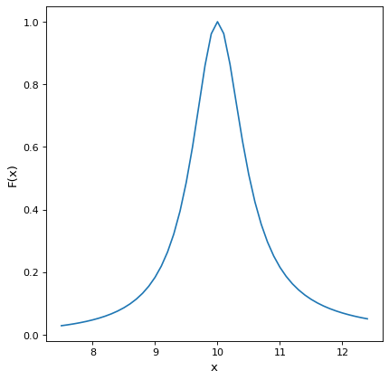

Drude1D¶
-
class
astropy.modeling.physical_models.Drude1D(amplitude=1.0, x_0=1.0, fwhm=1.0, **kwargs)[source]¶ Bases:
astropy.modeling.Fittable1DModelDrude model based one the behavior of electons in materials (esp. metals).
- Parameters
Examples
import numpy as np import matplotlib.pyplot as plt from astropy.modeling.models import Drude1D fig, ax = plt.subplots() # generate the curves and plot them x = np.arange(7.5 , 12.5 , 0.1) dmodel = Drude1D(amplitude=1.0, fwhm=1.0, x_0=10.0) ax.plot(x, dmodel(x)) ax.set_xlabel('x') ax.set_ylabel('F(x)') plt.show()
Attributes Summary
This property is used to indicate what units or sets of units the evaluate method expects, and returns a dictionary mapping inputs to units (or
Noneif any units are accepted).Names of the parameters that describe models of this type.
This property is used to indicate what units or sets of units the output of evaluate should be in, and returns a dictionary mapping outputs to units (or
Noneif any units are accepted).Methods Summary
evaluate(x, amplitude, x_0, fwhm)One dimensional Drude model function
fit_deriv(x, amplitude, x_0, fwhm)Drude1D model function derivatives.
Attributes Documentation
-
amplitude= Parameter('amplitude', value=1.0)¶
-
fwhm= Parameter('fwhm', value=1.0)¶
-
input_units¶
-
param_names= ('amplitude', 'x_0', 'fwhm')¶ Names of the parameters that describe models of this type.
The parameters in this tuple are in the same order they should be passed in when initializing a model of a specific type. Some types of models, such as polynomial models, have a different number of parameters depending on some other property of the model, such as the degree.
When defining a custom model class the value of this attribute is automatically set by the
Parameterattributes defined in the class body.
-
return_units¶
-
x_0= Parameter('x_0', value=1.0)¶
Methods Documentation
{kind=link}
{kind=link}